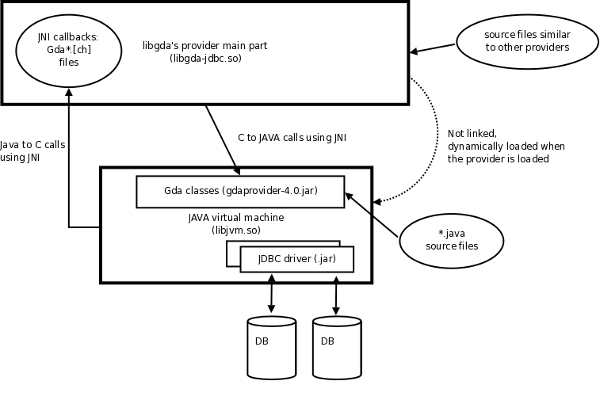

This notice briefly explains the structure of the JDBC provider as it is more complicated than the usual database providers.
The JDBC provider uses the Java Native Interface (JNI) to run a Java Virtual Machine (JVM) which itself is responsible for accessing the database using the JDBC API (java.sql.* classes) and a JDBC driver.
For each available JDBC driver, the JDBC provider will create a specific provider named after the JDBC driver name. For example the H2 database driver being named "org.h2.Driver", the corresponding GDA provider will also be named "org.h2.Driver".
The gda-list-jdbc-providers-4.0 program can be used to list all the usable JDBC drivers
found:
[]> gda-list-jdbc-providers-4.0
Usable JDBC drivers:
org.h2.Driver
sun.jdbc.odbc.JdbcOdbcDriver
Using the GDA SQL console, the list of database providers is then:
gda> .lp
Installed providers list
Provider | Description
-----------------------------+------------------------------------------------------------------------------
SQLite | Provider for SQLite databases
PostgreSQL | Provider for PostgreSQL databases
Berkeley-DB | Provider for Berkeley databases
MySQL | Provider for MySQL databases
org.h2.Driver | Provider to access databases using JDBC's org.h2.Driver driver
sun.jdbc.odbc.JdbcOdbcDriver | Provider to access databases using JDBC's sun.jdbc.odbc.JdbcOdbcDriver driver
MSAccess | Provider for Microsoft Access files
(7 rows)
Currently the only named parameter to define a DSN or to open a connection is the connection's URL as defined by the JDBC driver, for example "URL=jdbc:h2:/path/to/h2file" for the H2 database. Opening a connection using the GDA SQL console can be done as:
[]> gda-sql-4.0 org.h2.Driver://URL=jdbc:h2:/path/to/h2file
The following figure illustrates the provider's structure: the provider's corresponding shared library is the "libgda-jdbc.so" file (or "libgda-jdbc.dll" for Windows). This shared library does not depend on the Java's virtual machine library ("libjvm.dll") but this library is loaded when the provider is initialized.
Once the Java's virtual machine library is loaded, the JAVA code specific to the JDBC provider (the "gdaprovider-4.0.jar" file) and the various JDBC drivers (as .jar files) are loaded by the JVM.
The JAVA code specific to the JDBC provider (the "*.java" files) implements some classes instantiated and used by the C code through JNI. This code itself uses some native C methods through JNI which are implemented by the "Gda*.c" files (the "Gda*.h" files being generated by JNI tools).

The "jni-globals.h" file declares all the JAVA object identifiers used by the C code which are initialized when the corresponding JAVA classes are loaded by the JVM (in the "*initIDs()" methods).
The "jni-wrapper.h" and "jni-wrapper.c" files implement some small utility library to wrap some common (but not all) calls to JNI.
| Database | JDBC driver | Connection string template |
|---|---|---|
| H2 | org.h2.Driver | URL=jdbc:h2:/path/to/h2db |
| HSQLDB | org.hsqldb.jdbcDriver | URL=jdbc:hsqldb:/path/to/db |